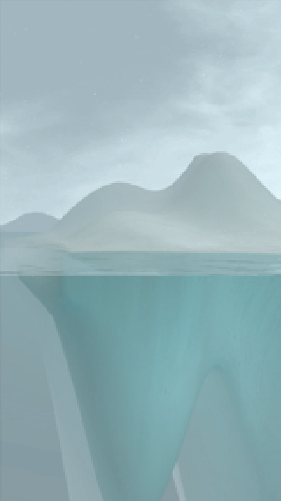
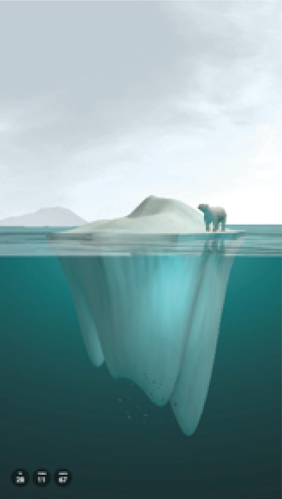
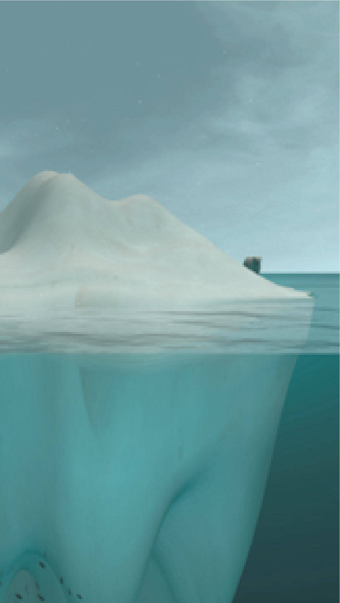

誠美樸真藝術品
首頁
戶外
大廳
黃敏俊
藝數網
A棟
B棟
誠美開發團隊
藝數網
yiiisu



我家的冰山
The iceberg
作品呈現
processing 3D computing on Embedded system
數據引用：機器所在地即時環境資訊
1.氣溫＝>冰山大小變化
2.濕度=>濕度過高，天空會飄雪
3.Pm2.5=>空氣品質過糟，畫面會由藍轉灰
4.風速=>冰山漂移
尺寸：冰山會依照螢幕大小及橫直向，自行調整畫面比例。
我家的冰山
The iceberg
西元1990年，‘跨政府氣候轉變 委員會’ (Intergovernmental Panel on Climate Change, IPCC)在年度的報告中引入’全球變暖潛能’的概念。開始提出全球暖化的說法。
提到全球暖化（Global Warming）第一件想到的事情是什麼呢？
是臺灣夏日不斷破紀錄的燠熱高溫?是日夜不停運轉的冷氣?還是北極圈裡北極熊抱著逐漸消融的冰山在海面上漂流的畫面？
我們想傳達我們對全球暖化的憂慮。真正冰山的變化速度是相對緩慢的。為了讓我們真切的感受冰山的融化，透過程式語言運算，我們加速冰山變化的時間序列，即時3D成像，時時取得你家天氣溫度來改變冰山的大小，天氣熱，冰山融化，天氣冷，冰山長大。
畫面也會隨著不同的時間變化不同的色彩。隨機出現的魚群聚集到這片水域爭先恐後地覓食。冰山上有一隻北極熊，悠閒的在冰上棲息。當氣溫炎熱到一個程度以上，冰山會變得很小，小到連北極熊都必須悲傷地站在水裡。
隨著你家窗外的風，冰山會慢慢的飄向畫面不同的位置。
背後的天空也會隨著空氣PM2.5的品質好壞時而清澈，時而模糊。
但當空氣變得非常糟，畫面裡的生物也會靜悄悄的躲起來。
天空偶而會飄起雪來，告訴我們，外面快下雨（濕度）了。
全球暖化現象越來越嚴重了，你不相信？我把冰山送到你家。
藝數網http://yiiisu.com/?section=frame#/store/
© Copyright 2020 - All Rights Reserved